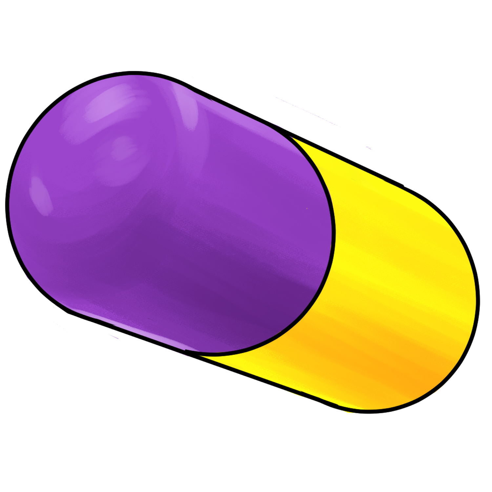
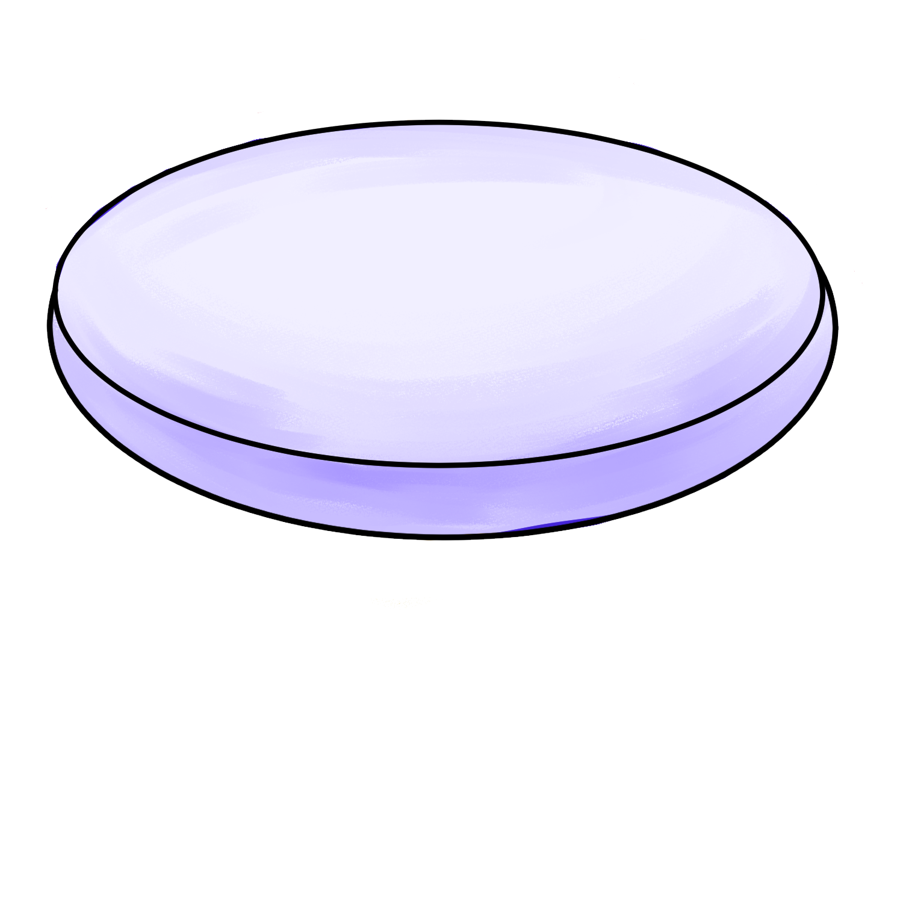

약물 중독,
한순간의 호기심으로
삶이 멈출 수 있습니다.
홀로 감당하기 힘든 어려움, 우리가 함께하겠습니다.

중독이란?
유해한 결과에도 불구하고 약물을 강박적으로 찾고 사용하게 되며 언제든 재발 가능성이 있는 뇌질환을 말합니다.지속적인 약물 사용은 판단, 의사결정, 학습, 기억 및 행동 통제에 결정적인 역할을 하는 뇌 부위를 물리적으로 변화시켜 강박적, 파괴적인 행동을 하게 되는 중독으로 진행됩니다.일반적으로 중독된 사람은 스스로 약물 사용을 멈추지 못합니다. 끊더라도 금단 현상으로 다시 약물 복용을 할 수 밖에 없습니다. 약물 사용을 멈추려면 도움이 필요합니다.

